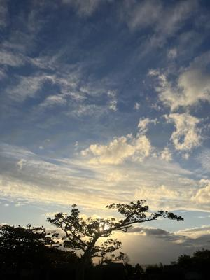

うるがいの話 ある日
最新: 駐車料金【うるがいの話 ある日】とは 一日だけのプログです
『うるがいの話』の最新一日だけのプログで、通信料が少なく経済的だ。カニの画像をクリックすると全ての日付が載る『うるがいの話』サイトを表示します
|
|
【うるがいの話】 うるがい(ｳﾙｶﾞｲ urugai)とは、『もずくがに』の名前でとても大きくなります。 |
|---|---|
|
|
【カミマヤーの話】 猫のことを方言でマヤーといいます。カミマヤー（kamimayaa）とは、神の猫のことです。 |
|
【たながぁの音楽】 たながぁ（ﾀﾅｶﾞｰ tanagaa）とは手長えびのことで、何種類かあり大きいのは車 エビぐらいになります。 |

|
【ぶながぁの話】 ぶながぁ(ﾌﾞﾅｶﾞｰ bunagaa)とは、赤い髪の毛、赤い身体、そして身長は１ｍ２０ｃｍ ぐらい、川の蟹を食べているの目撃された。場所は沖縄県国頭郡大宜味村のと ある村僕の隣近所に住んでいる爺さんから、聞いた話です。 |
|
|
【ギーマの話】 ギーマ(giima)とは、山原の里山に咲くスズランに似た、 花を付けます。実は食べられます、 気が付くと口の周りが紫になっています。 |
2026年01月18日 (日）駐車料金
15:42

県立図書館の駐車料金を支払うため駐車カードを挿入、５０円と
表示しているの百円を投入、５０円のお釣りが出てきました。が
駐車カードが出てくる筈なのだが、エー、此処に電話してとはあ
るが、電話するのも面倒くさいし、で、もう一度百円を入れた。
すると、５０円がお釣りとして出たあと駐車カードも出てきまし
た。フーン、百円か・・・、わざわざ取り返すのも面倒くさいの
で駐車場を出ました。
そう言えば、昨日の１６日で線香を使おうとしたところ線香が置
かれていない、オ、利用した始めは寺で置いてくれる筈だったが
、事務所へ行って３００円で購入する。法事を終え片付けをする
茶碗を洗って元の場所に戻すが、フと茶台が無いことに気付く。
他のところは、全部ある。うちだけ？、さすがに無視できず事務
所へ、茶台がない旨を伝える（確認は来年以降になるが）。
昨日、出かけるまでに珍しくテレビで星座の占いを見た、１２番
目だった。なるほど、夕方の楽しみも無くなったのはそのせいか
と、図書館から帰るとき、交差点で乗車の前方がぐちゃぐちゃに
なっている事故現場に遭遇した。ＯＴＳレンタカーのユニフォー
ムを着けた人が警察と話している、近くには３名の女性がいる。
ホー、観光客がレンタカーを借りて事故たのかと・・・。彼女達
と比べると私の不運など大したことことが無いと。
あ、お寺の近くにはジャングリアがある、ヨメたちはそこからの
叫び声など音が聞こえたと言っていたが、補聴器を付けている私
は聞こえませんでした。